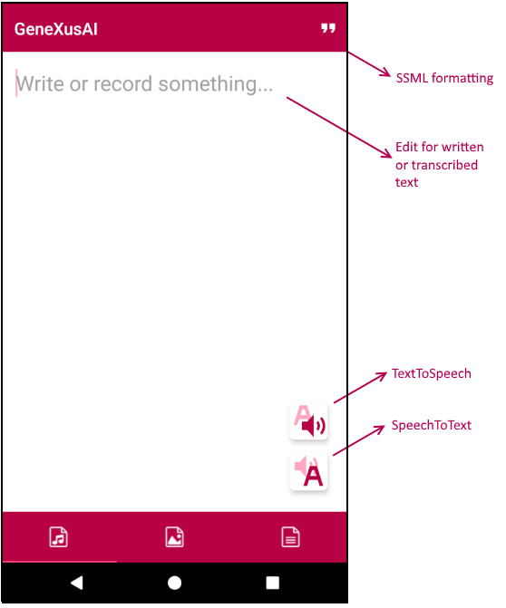
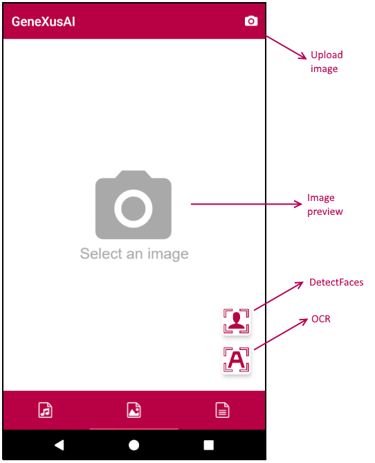
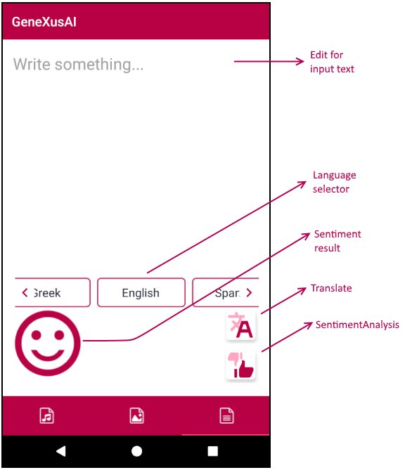

This article refers to the proof of concept made during the GeneXus Meeting #28 conference about GeneXusAI.
 Sample - GeneXusAI PoC Sample - GeneXusAI PoC
Sample - GeneXusAI PoC (up to GeneXus 16 Upgrade 8)
Note: It is highly important to install GeneXusAI built-in module before importing the GeneXusAI_Sample.xpz file into your Knowledge Base.
1. Go to Knowledge Base option from the GeneXus Toolbar.
2. Click on Manage Module References.
3. Look for GeneXusAI module on the displayed list.
4. Click on the "Install" button.
You could see the installation process on the 'General' option of the output section. Once installed, you can import the GeneXusAI_Sample.xpz file using the Knowledge Manager Import.
The Knowledge Base includes:
- GXAI_SD menu
The main object, organized in three Tabs.
- Panels folder
- Utilities folder
- GetProvider procedure: Get a provider configuration from a name.
- SquareRegions procedure: Transform rectangular regions (as OutputRegion data type) to square regions (based on outputSquare data type, included on this sample). It is used with DetectFaces and OCR for drawing the detected areas using SD Image Map control over a Grid control.
- AddDelay function: A simple function used for displaying the output phrase of SpeechToText word by word.
- GetBlobUrl procedure: A helper function that takes a blob as input and retrieves the URL on the server-side. This object is not used by default. See Notes section for detailed information about its purpose.
The application is a simple proof of content for some GeneXusAI task. It is distributed in three tabs representing each available submodule: Audio, Image, and Text.
|  |
This first tab allows you to execute the Audio module tasks: SpeechToText procedure and TextToSpeech procedure.
As a user, you can input your text and tap on the TextToSpeech button for synthesizing the voice and listening to it. Analogously, you can record your voice with the SpeechToText button a transcribe it, which transcription will be displayed on the same edit field that you input text. Besides, for TextToSpeech, you can format your input text using SSML tags. The 'quotes' button on the top right will format your text with some of these tags (with prosody and say-as) once you had copied a segment of your text to the clipboard. When you listen the result will appreciate how the output voice changes.
This panel, in addition to GeneXusAI, only use Audio and AudioRecorder external objects for playing and recording audio streams. There is also two effects that you might consider attractive for an application: 1) Audio recording/playing progress, and 2) Word-by-word displaying result
|
|  |
This second tab allows you to execute two Image module tasks: DetectFaces procedure and OCR procedure.
As a user, first you must take a picture or select a photo from your gallery. Once displayed on the screen, you can execute DetectFaces or OCR tasks from their respective buttons in order to identify faces or text on that image.
This panel, besides the usage of Camera and PhotoLibrary external object for upload an image, it uses SD Image Map control for drawing rectangles over a background image (in this case, our picture). Due to the limitations of such controls, rectangular regions (top, left, width and height) retrieved from GeneXusAI are transformed to squares (top, left, size) that best fits the original rectangle. Also, this panel allows you to edit the faces/text tags with your own content (as you were tagging a picture on your social media app).
|
|  |
This third tab allows you to execute three Text module tasks: DetectLanguage procedure, Translate procedure and SentimentAnalysis procedure.
As a user, you can input a text and tap on the Translate button for displaying the language to be translated or tap on the thumb up/down button for analyzing the sentiment of your input opinion. In this last case, the result will be a happy face (when the score is higher than 0.5), a sad face (when the score is lower than 0.5) or both at the same time (when the score is exactly 0.5). The translation will take the input language 'automatically' calling the DetectLanguage procedure for identifying the language where your text has been written.
|
|